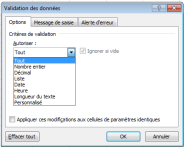
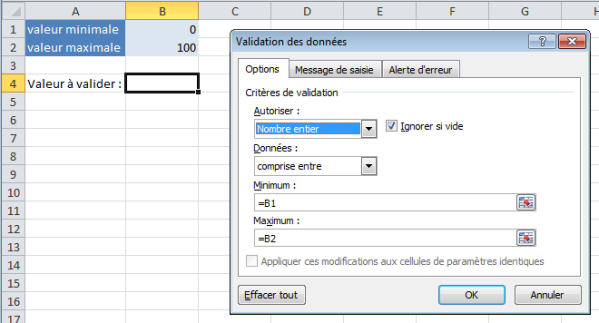
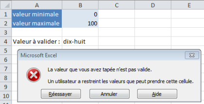
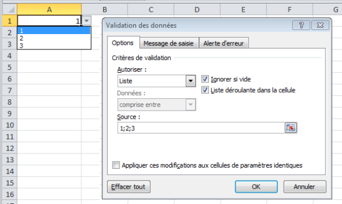

Validation de données et liste déroulante
Une autre méthode permettant de protéger les données est de limiter le type de données pouvant être inséré dans une cellule.
Par défaut, une cellule peut contenir n'importe quel format de données : un nombre entier, une valeur décimale, une date, une heure, ...
Voyons comment limiter à un type précis de données, vous ne pourrez alors encoder que le format défini, cela permet d'éviter d'encoder un montant dans une cellule qui devrait contenir une date par exemple.
Méthode :
La première étape consiste à sélectionner les cellules pour lesquelles vous souhaitez limiter le type de données.
Rendez-vous ensuite dans l'onglet Données et sélectionnez le bouton Validation de données se situant dans le groupe Outils de données.

Vous accédez au menu ci-dessus, et dans la liste déroulante intitulée Autoriser, vous pouvez choisir le type de données autorisées dans la ou les cellule(s) sélectionnée(s).
Par défaut, l'autorisation est fixée sur Tout.
Exemple : Nombre entier
Je voudrais ne pouvoir encoder qu'un nombre entier dans la cellule B4, et ce nombre entier devra être compris entre 0 et 100. Seulement, ces valeurs minimales et maximales peuvent varier, je vais donc les insérer dans mon tableau afin de pouvoir les modifier facilement.

J'ai donc choisi Nombre entier danas la liste de format autorisé et sélectionné la condition compris entre. Nous aurions pu encoder 0 et 100 directement dans le champ Minimum et Maximum, mais il aurait fallu modifier la règle à chaque fois que les valeurs de référence auraient changé. Nous faisons donc référence à 2 cellules : =B1 et =B2.
Maintenant, si mes valeurs de références changent, je dois juste les encoder dans les cellules B1 et B2 et la règle de validation sera automatiquement adaptée aux nouvelles valeurs.

Si j'encode du texte en B4, un message d'alerte apparaît signifiant que la valeur encodée n'est pas valide.
Seuls les nombres entiers compris entre 0 et 100 seront acceptés dans cette cellule, jusqu'à ce que je change les valeurs minimales et maximales ou que je supprime la règle.
Créer une liste déroulante
Si vous devez sélectionner un texte ou une valeur parmi une liste prédéfinie, alors vous pouvez créer une liste déroulante associée aux cellules concernées.
Suivez la même procédure que décrit ci-dessus, mais au lieu de choisir le format Nombre entier, sélectionnez le format Liste.
Ensuite, vous pouvez sélectionner une source de données. Si les données de la liste se trouvent dans les cellules A1, A2 et A3, et que vous spécifiez A1:A3 comme source de données, le logiciel vous proposera une liste déroulante contenant ces trois valeurs.
Vous pouvez aussi encoder manuellement les différentes valeurs de votre liste en les séparant par un point-virgule.

Supprimer une règle de validation
Sélectionnez la ou les cellule(s) concernée(s)
Allez dans le menu de validation présenté précédemment
Sélectionner Tout dans la liste de formats autorisés
Validez en appuyant sur Ok